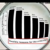

Asociaţia Brokerilor de pe piaţa de capital vă invită să fugiţi de bursa românească şi mai ales de brokerii români. Cel puţin asta înţelege orice om de bun simţ urmărind clipul de…promovare pentru Gala Premiilor Pieţei de Capital 2011, realizat de agenţia Propaganda.

Captură din clipul de...promovare
Cât de inconştient trebuie să fii încât să „promovezi” investiţia la bursă cu texte precum „societatea e în pericol, întreaga lume e în haos şi criză”? Cât de infantil eşti când asociezi voluntar piaţa de capital cu imagini din filme apocaliptice cu poduri şi turnuri prăbuşite, explozii, maşini care zboară, oameni care crapă, ilustrând cu grafice despre consumul de droguri şi infracţionalitate?! Cât de bine cunoşti psihologia investitorului?
„Din 15 decembrie nimic nu va mai fi la fel”, concluzionează catastrofic vocea unui nene despre care nu ştim dacă se screme sau e strâns de gât când bâiguie “campionii capitalului românesc”. Clar, nu va mai fi la fel, o să dea năvală investitorii români văzând câtă încredere, linişte şi inteligenţă transmit brokerii autohtoni.
Dragi cititori, nu vă vine să daţi fuga la bancă, să scoateţi banii, şi să cumpăraţi acţiuni listate când vedeţi maşinile zburând de pe pod, piesele dominoului căzând şi pe băiatul ăla care-şi suge chibritul?
Partea tristă e că majoritatea brokerilor se lamentează prin presă că statul român nu ajută bursa, că autorităţile de control sunt politizate, că legislaţia e echivocă, drept pentru care ei n-au decât 2500 de clienţi locali în total.
Asociaţia Brokerilor e organizaţia profesională şi patronală a societăţilor de servicii de investiţii financiare (SSIF) şi a instituţiilor de credit. Conducerea asociaţiei e formată din Dan Paul, Iancu Stavrositu, Nicolae Gherguş, Viorica Nagy şi Alina Petrişor.


{kind=link}
cu asa promovare sperii si participantii la eveniment, nu doar toti clientii!!!
Când au spus că “ei sunt cei mai buni brokeri” și au aratat clipul din Reservoir Dogs cu gașca de infractori era să-mi puște o venă în cap. De râs.
„Din 15 decembrie nimic nu va mai fi la fel”, ar putea fi un mare adevar pentru Adrian Nastase. dar asta e alta poveste
@ sdb: aia din reservoir dogs parca mor toti pana la urma, nu?
“ei sunt cei ma buni brokeri!”. si dupa aia prim plan cu baietii din reservoir dogs. adica niste baieti care furau banii altora! ) genial!
) genial! 
@sdb, @ionuţ: asta e imaginea pentru a cărei construcţie brokerii români plătesc! Nu-i superb? Iţi dau bani să mă faci infractor la propria-mi gală? Asta da propaganda!
Cât de greu e să găseşti măcar un film cu finanţişti din care să copiezi, dacă nu te duce tărtăcuţa să faci un clip cu imagini originale?!
organizatorii brokeri sunt idioti sau sinucigasi? niste vrajitoare le mai lipseau in fimul ala ca sa fie cel mai penibil clip din lume.
Comments on this entry are closed.